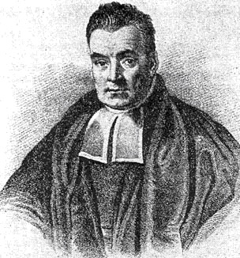

11 Unconditional Probability#
Unconditional
Probability
AAE35103
\n\n\n\n\n\n\n\n \n\n2
Roll two fair four-sided dice. Let x1 outcome of first roll, x2 outcome of second roll
A is the event x1 ≥ 2. What is the probability of A? Draw the 2-D grid sample space. Show event A on
the grid
B is the event x2 > x1. What is the probability of B? What are the elements in B? Show event B on the
grid
What is P(A|B)?
1, 1
1, 2
1, 3
1, 4
2, 1
2, 2
2, 3
2, 4
3, 1
3, 2
3, 3
3, 4
4, 1
4, 2
4, 3
4, 4
x1
x2· P(AIB) = P(ANB)#
\n\n2
Roll two fair four-sided dice. Let x1 outcome of first roll, x2 outcome of second roll
A is the event x1 ≥ 2. What is the probability of A? Draw the 2-D grid sample space. Show event A on
the grid
B is the event x2 > x1. What is the probability of B? What are the elements in B? Show event B on the
grid
What is P(A|B)?
1, 1
1, 2
1, 3
1, 4
2, 1
2, 2
2, 3
2, 4
3, 1
3, 2
3, 3
3, 4
4, 1
4, 2
4, 3
4, 4
x1
x2· P(AIB) = P(ANB)#
o B = P(m) =- P(B)#
16 AndPla = A#
P(A) = 1 \n\n3 In many cases, we start with information about conditional probabilities, and we seek to calculate unconditional probability. How can we do that? In math: we know all the P(B|Ai), how do we calculate P(B)? (and what do we mean by “all”?) In this experiment, the Ai are disjoint and form a partition of S A1 A2 A3 A4 S B P(A(B)#
P)AnB) P(B) 1 an tto know we wom (B).#
AYMB#
his Labris Sti#
\n\nAnd so we can write:
4
A1
A2
A3
A4
S
B
PB
= ZP(Ai)
=>
PB= P(BIA)
. PA
P(BIAi)
= PB
↑
P(Ain B)
= P(BIAi(
. P(Ai)
TOTAL
PROBABILITY
P(B)
\n\n\n\n \n\n5
Three boxes contain red and green balls. Box 1 has 5 red balls and 5 green balls, Box 2 has 7 red
balls and 3 green balls and Box 3 contains 6 red balls and 4 green balls. The respective
probabilities of choosing a box are 1/3, 1/3, 1/3
What is the probability that the ball chosen is green?
G:= the ball chosen is green
B1:= Box 1 is selected
B2:= Box 2 is selected
B3:= Box 3 is selected
Then,
P(G|B1) = 5/10
P(G|B2) = 3/10
P(G|B3) = 4/10
Therefore, using the law of total probability we have
3
5 RED
1
5 GREEN
P(B1) =-
7 RED
P(B2)
=-
2
3 GREEN
S
S RED
P(B3)
= 4
4
GREEN
P (c)= P(G/Bi) P(Bi)
=PICTP(B1)
\n\n5
Three boxes contain red and green balls. Box 1 has 5 red balls and 5 green balls, Box 2 has 7 red
balls and 3 green balls and Box 3 contains 6 red balls and 4 green balls. The respective
probabilities of choosing a box are 1/3, 1/3, 1/3
What is the probability that the ball chosen is green?
G:= the ball chosen is green
B1:= Box 1 is selected
B2:= Box 2 is selected
B3:= Box 3 is selected
Then,
P(G|B1) = 5/10
P(G|B2) = 3/10
P(G|B3) = 4/10
Therefore, using the law of total probability we have
3
5 RED
1
5 GREEN
P(B1) =-
7 RED
P(B2)
=-
2
3 GREEN
S
S RED
P(B3)
= 4
4
GREEN
P (c)= P(G/Bi) P(Bi)
=PICTP(B1)
P(G/Bc)P(b))
P(s(B3)P(B3)=+ \n\n6 Let’s visualize this problem with a probability tree diagram DECISION 1 SELECT THE BOX DECISION 2 · SELECT THE BALL Fan Fo Fo G R G R G R ↑(G(B1) P(B1)
P(G(B2)P(B2)
P(G/B3)P(B3)#
P(G) \n\n7 Tree diagrams will help you visualize and solve some types of problems. Let’s look at another example: If you toss a fair coin, there are two potential outcomes, H, or T. We can depict this on a tree diagram ⑧ ACTION (FLIP A COIN) · ⑧ H T THESE ARE POTENTIAL Two OUTCOMES \n\n8 Since the coin is fair, each outcome has an equal probability of occurring. P(H) = P(T) = ½#
· H => 112 ⑧ = 1/2 ⑧ \n\nAfter tossing the coin, we can choose a ball from a bag. The bag has three balls: a green ball, a blue ball, and a red ball We can now add information to our tree diagram 9#
Emi 1/3 ⑨ G H#
↳ ⑧
B Il
13 · R ⑧ 1/ 113E I ⑧” B I T 1, 113 ↑ · R ACTION 2 \n\nIn general, if you see “OR” in the problem, you add. If you see “AND” in the problem, you multiply For example, what is the probability of getting H or T? We can now add information to our tree diagram 10 P( + UT) H 112 EVENTS T AND H Are DISJOINT => P(HNT) = 0 11 T P(MUT) = P(M) + p(t) = y +- = 1 \n\nIn general, if you see “OR” in the problem, you add. If you see “AND” in the problem, you multiply For example, what is the probability of getting H and R? 11 P(H1R) 113G 112 Su 1 HAND R ARE INDEPENDENT 11/3 I · R P(HR) = P(H) . PTR) = – = \n\nWe add down the tree, we multiply across H T ½ ½ B G R ! 1 3 ! 1 3 ! 1 3 B G R ! 1 3 ! 1 3 ! 1 3 H T ½ ½ B G R ! 1 3 ! 1 3 ! 1 3 B G R ! 1 3 ! 1 3 ! 1 3 Exclusive: add Independent: multiply 12 ↓ let 2na \n\nWe can add to the complexity of the problem… What is the probability of getting T and R or H and B? Let’s calculate T and R first Then H and B 13 · G Po B ⑧ · G 112 1 · ↳R 4/2 · B P(H1B) = P(M) . P(B) 13 R P(T 1r) = P(T) . P(r) =I . t = & = \n\nWe can add to the complexity of the problem… What is the probability of getting T and R or H and B? And now let’s put them together 14 12 B
⑧ P (TAR UH1B)#
PHNB)
P(H1B) Y 1/2 g I = t
E 13 · R = - \n\nLet’s change it up a bit What is the probability of getting a red ball? Well, this is the probability of getting T and R or H and R! 15
⑧ 112 ot ⑥ 913 · R ⑧ P(NR UHAR) = P(TAR) + P(HnR) ↳ of ⑧ ⑧ I +
1 13 R = 4 \n\nNow, let’s add another layer of complexity Our coin is biased and has a probability of 0.6 of landing on tails Also, if the coin lands on heads, I choose a ball from Bag 1, if the coin lands on tails, I choose a ball from Bag 2 Bag 1 contains one green ball, one blue ball, and one red ball. Bag 2 contains three green balls, two blue balls, and one red ball Let’s redraw our tree diagram. The outcomes remain the same, but the associated probabilities change 16
3 balls -6 balls
⑮ , 3 215 H B ↳ R ⑨ 3
36
R \n\nWith our new tree diagram, what is the probability of getting a red ball? This is still the probability of getting T and R or H and R 17 ⑮ , 3 P (R) = P(H1RUT1 M) 215 H B = P(H1R)
P(T1R) ↳ R ⑨ = P(RIH)P(t)
P(rI +(P(t) 3
36 =
R#
\n\n18 Here’s a different type of problem A fair coin is tossed. If the coin lands on heads a bag is filled with one black ball and three white balls. If the coin landed on tails the bag is filled with one black ball and nine white balls. A ball is then selected from the bag. What is the probability that given the ball selected is black, the coin landed on a head? Let H = Heads, T = Tails, and B = Black ball selected Set up the problem in terms of the probabilities we have: And the probability we want: How can we find that? Emm ⑧ P (H) = 0 , 5 P (BIH) = 0,20 P( +) = 5 P(T) = 0, 5 ⑧ ⑧ P(+) = 0, 5 P(B1 +) = 0 . 1 P(BIH) =25 P(B(T) = 0, 1 ⑤ ⑧ ⑨ · B W w B P(H(B) = ? \n\n19 Bayes’ Theorem will help, and we can easily derive it ourselves: Assume we have: P(A|B), P(A), and P(B) We want:
P(B|A) Now try to find an expression for P(B|A) in terms of the probabilities we do have: Thomas Bayes 1701 - 1761 A & B INDEPENDENT PRIOR Probabilities [ POSTERIOR PROBABILITY WE CAN WRITE= => P(ANB) = P(B1A)(3)#
\n\n\n\n \n\n20
Thomas Bayes
1701 - 1761
Bayes’ Theorem will help, and we can easily derive it ourselves:
Very useful for making inferences about phenomena that we cannot observe directly. Sometimes
described as “reasoning about causes when we only observe effects”
So
,
P(BMA) =
P(AIB(P(B)
From (3)
AND
WE
HAVE
(3)
In
(1)
P(BIA) =
AIB) P(B)
BAVES
THEOREM
\n\n\n\n
\n\n20
Thomas Bayes
1701 - 1761
Bayes’ Theorem will help, and we can easily derive it ourselves:
Very useful for making inferences about phenomena that we cannot observe directly. Sometimes
described as “reasoning about causes when we only observe effects”
So
,
P(BMA) =
P(AIB(P(B)
From (3)
AND
WE
HAVE
(3)
In
(1)
P(BIA) =
AIB) P(B)
BAVES
THEOREM
\n\n\n\n

\n\n21 Now try to solve our previous problem A fair coin is tossed. If the coin lands on heads a bag is filled with one black ball and three white balls. If the coin landed on tails the bag is filled with one black ball and nine white balls. A ball is then selected from the bag. What is the probability that given the ball selected is black, the coin landed on a head?#Using BAYES’THEOREM : P(HIB)= B(H)P(H) P(B) First : Let’s Find P(D) : P(H) · P(T) DIBIHPIT P(B) = P(B(H)P(H) ·
P(BIT) P(t) = 25 . 0 . 5
0 . 1 . 10. 5) = 0 . 175 them P(H(B)#
0% 05#
0 .714 (71 . 4 % \n\n22 The Bayesian trap An engine-driven alternator keeps a Purdue airplane’s battery charged and runs many of the aircraft’s electronics If it fails, the best course of action is normally to declare an emergency and divert to the nearest airport Fortunately, this only happens on maybe 0.1% of flights. If the alternator does fail, a warning light is in place to alert the pilot The warning light will correctly identify a failed alternator 99% of the time, and only give a false positive 1% of the time The alternator warning light goes off during a flight What is the probability that the alternator has actually failed? \n\n23 The Bayesian trap ALTERNATOR ⑧ F- FAILS 0. 001#
= 0 . 999 F-DOESN’T FAIL F ↑ D
DETECT ⑧ ⑧ P(DIF) =. 99 D’D Di D’ - DOESN’T DETECT D ⑤ ⑧
· P (DIF’) = 0 . 01 FALSE POSITIVE P(F(x) = ??? \n\n24 The Bayesian trap BAYES’ THEOREM P(FID) = IHDIFIPS P(D) = P(DIF)P(F)
P(x)f(p(f)) = 0 . 001 ( . 99)
01 . (0 . 999) = 0 . 01089 then , P(F(D)= (00 = 0 . Og 19 HOW CANHis BE ??? -> P(F) is VERY Low CRARELY HAPPENS)
DETECTIONiS MODERATE
-Y RELIABLE
MOST DETECTIONS#
DUETo FALSE POSITIVES \n\nReading 25 Chapter 1.1-1.4 of Carlton and Devore, Probability with Applications in Engineering, Science, and Technology, 2nd ed., 2017 \n\n